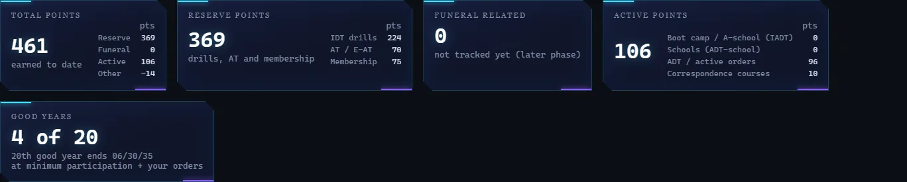
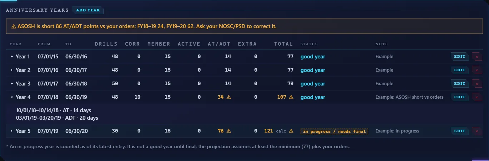
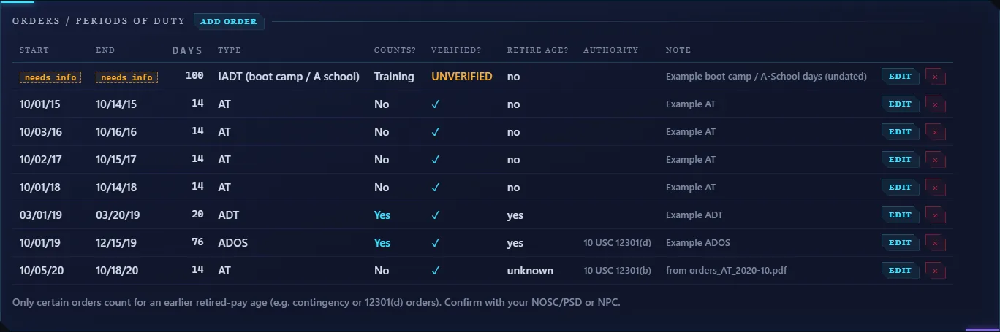
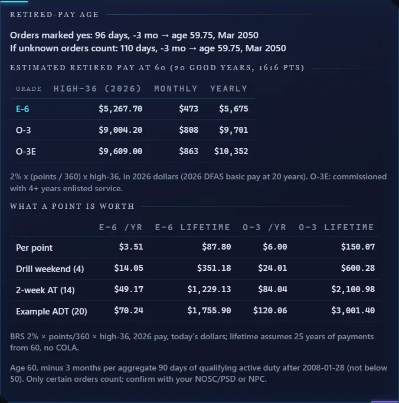
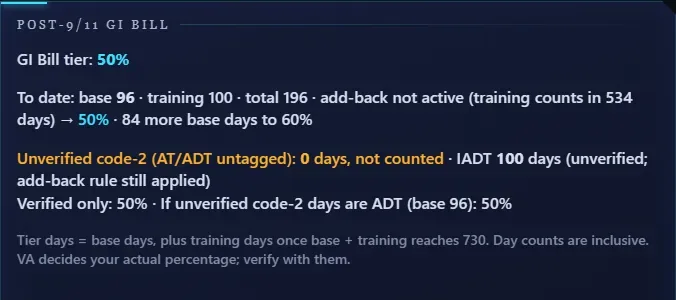
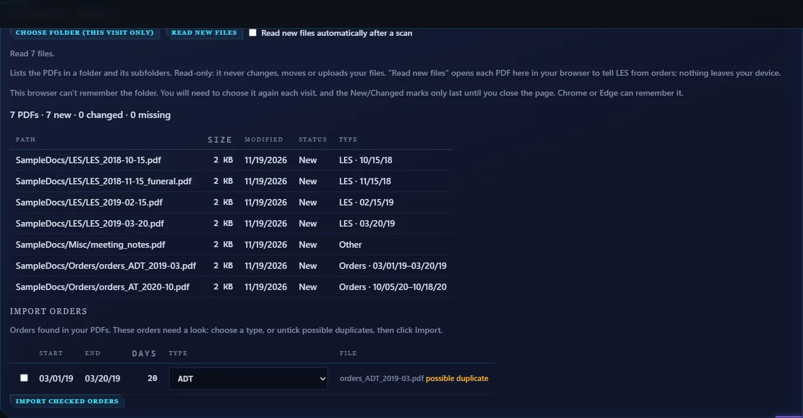
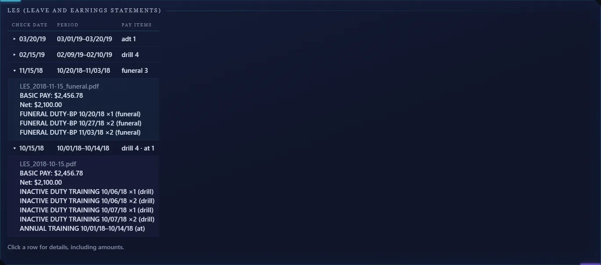
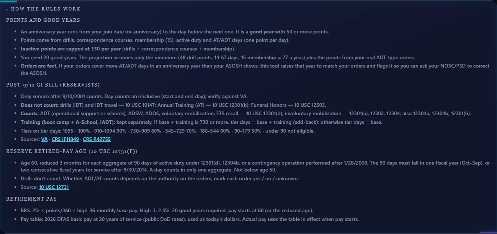

Purpose
A free, open-source tracker that does Reserve retirement math on your own device, with code small enough to read and check.
It was built for U.S. Navy Reservists. It tracks points per anniversary year, good years toward 20, orders, an early retired-pay age, a retired-pay estimate and a Post-9/11 GI Bill tier. Because the inputs are sensitive personal records, privacy was the first design constraint.
Unofficial tool. Not affiliated with or endorsed by the U.S. Navy or DoD. Figures are rule-of-thumb estimates, not advice. Verify everything with your NOSC/PSD. The app uses no Navy or DoD seals, logos or branding.
Screenshots
Every panel in the app, loaded with its built-in demo data. All numbers are made up. None is a real service record.
Headline numbers

Service record


Benefit estimates


Documents


Reference and setup

What it does
- Profile. Join date, retirement plan (BRS or High-3), current grade, planned active-duty days per year.
- Points and good years. Points per anniversary year, good years (50 or more), and the 130-point cap on inactive points.
- Orders. Start, end, type, authority, verified flag, and whether each order counts toward an earlier retired-pay age.
- Statement check. If orders cover more AT/ADT days than the points statement shows, the year is raised to match and a warning says to ask NOSC/PSD to correct it. Orders are treated as fact.
- Early retired-pay age. Three months earlier than 60 for each aggregate 90 days of qualifying duty, using fiscal-year rules from 10 USC 12731(f).
- Retired-pay estimate. Points divided by 360 gives equivalent years. That is multiplied by 2.0% (BRS) or 2.5% (High-3) and a base pay figure from the public 2026 pay table.
- GI Bill tier. Qualifying days map to the 50% to 100% tiers, with the rules for boot camp and A-School days built in.
- Documents folder. Point it at a folder of PDFs. It marks each file New, Changed, Unchanged or Missing, and reads new ones to sort them into Leave and Earnings Statements, orders, evaluations, other, or unreadable scans.
- Orders import. Orders found in PDFs show as a review list. Nothing is added until you tick rows. Likely duplicates start unticked.
- Backup. Export and import as a validated JSON file, plus a button to clear everything from the browser.
Sample data
Everything below is sample data. These are made-up, round numbers from the app's built-in demo mode, run through the app's own calculation code. They are not anyone's real service record.
| Check | Sample input | Sample result |
|---|---|---|
| Good years | Four finished years with 77, 77, 79 and 107 points (the last after the statement check below) | 4 good years (50+ points each) |
| Statement vs orders | Year 2018–19: statement shows 83 points and 10 AT/ADT points. Orders cover 34 days. | Year raised to 107 points, with a warning to get the statement corrected |
| Early retired-pay age | 96 qualifying days after 28 Jan 2008 | 3 months earlier than age 60 |
| GI Bill tier | 96 qualifying days | 50% tier, 84 more days to reach 60% |
Stack
- Vanilla JS (ES modules)
- IndexedDB
- File System Access API
- pdf.js 4.4.168 (vendored)
- Web Worker
- Content-Security-Policy
- node:test (66 tests)
- No build step
- No dependencies
Architecture
From PDF to dashboard
Code layout: calc.js holds all the math with no DOM or storage. db.js holds all storage. Parsers, classifier and backup logic are also pure modules, so they run under Node for testing.
Security & privacy
- No server and no database. The app is plain HTML, CSS and JavaScript files. Data lives in the browser's own IndexedDB on your device.
- The browser enforces "no network". The page's Content-Security-Policy sets
connect-src 'none', so it cannot make requests. It also blocks scripts, styles and fonts from anywhere but its own files and setsobject-src 'none'andbase-uri 'none'. - No analytics, tracking or cookies.
- Minimal third-party code. The only dependency is pdf.js, copied into the repo with its Apache-2.0 license and served from there, never from a CDN.
- Read-only folder access. It asks the browser for read permission only. It never writes, moves, renames or uploads a file.
- SSN-shaped strings are masked in text the parsers store.
- Hardened backup import. It rejects anything that isn't a valid backup, keeps only known fields, and caps the row count.
- Small enough to audit. The README points to three files to read: the policy, the storage module and the math module.
Because the only copy of your data is in the browser, clearing site data erases it. Use Export backup.
Notable engineering decisions
- Privacy enforced by the browser, not by promise. A strict CSP turns "we don't send your data anywhere" into something the browser guarantees.
- Pure, tested core. Calculation, parsing, classification, ingest and backup are DOM-free ES modules with unit tests. All test data is synthetic. No real documents are used.
- Humans stay in the loop. Parsed orders are proposals. Duplicates are flagged and nothing imports without a tick.
- Idempotent scanning. Files are cached by path, size and modified date, and parsed statements are keyed by a SHA-256 of the file, so re-scans never re-read or double-count.
- Additive schema migrations. Each database version only creates what is missing, so existing data is never touched.
- Graceful degradation. Chrome and Edge can remember the chosen folder. Firefox and Safari fall back to a one-visit folder picker.
- Honest uncertainty. The early-retirement estimate depends on which orders legally count, so each order is marked yes, no or unknown and the app shows the effect of the unknowns.
Status
Working, with 66 passing unit tests. It is a local, browser-only app with no build step. It runs from any static web server, for example python -m http.server. It is not hosted on this site, so there is no live link.